内存管理
本文最后更新于：February 13, 2023 pm
内存管理
内存管理: 关注内存和外存之间的信息流的组织，简单来说就是关注进程在什么时候将进程放入内存和内存中如何放置
基本内存管理
基本内存管理指不使用虚存技术，也不使用高速存储技术(cache)，仅有内存和外存作为存储设备时，OS对内存的管理
程序的加载与链接
高级语言由源代码转换为进程需要3个步骤:
- 编译: 由编译器将源代码转为机器指令，其中源代码会被编译为多个模块(某些库文件是单独模块)
- 链接: 将编译出的多个模块链接到一起形成加载模块(包含完整程序和数据模块)
- 加载: 由加载程序将加载模块装入内存
链接
链接的方式有3种:
- 静态链接
- 加载时动态链接
- 运行时动态链接
静态链接
在程序运行之前，先将各目标模块及它们所需的库函数，链接成一个完整的装配模块(又称执行模块)，以后不再拆开
静态链接即将所有目标模块和库函数打包为一个模块，在打包时链接器需要:
- 修改相对地址: 由编译程序产生的所有目标模块中，使用的都是相对地址，其起始地址都为0，在链接成一个加载模块时修改模块的相对地址
- 变换外部引用地址: 将每个模块中所用的外部调用符号也都变换为相对地址(加载模块内部的相对地址)
缺点:
- 不利于代码共享: 不同应用使用同一个模块，但该模块被多次分别打包入不同加载模块
- 不利于模块的独立升级: 每次对某个目标模块的修改升级，都要打开整个加载模块
- 浪费存储空间和处理器时间: 可能链接一些不会执行的模块
加载时动态链接
待加载的模块在加载内存时，如果该模块中有到外部模块的引用，加载程序将查找这些模块并加载内存，并把这些引用修改为相对应用程序模块开始处的相对地址
加载时动态链接的模块链接由加载程序完成，链接器只完成了对外部模块引用的声明
优点:
- 便于各个模块的独立升级: 重新编译新模块后将加载模块重新加载即可
- 便于实现模块的共享: 共享的模块只需在内存中保留一份即可
缺点:
- 浪费存储空间和处理器时间: 可能链接一些不会执行的模块
- 模块加载后不能移动位置: 因为仅在加载时重定位，若移动则地址错误
运行时动态链接
在程序执行中需要某目标模块时，由操作系统去找到该模块并将之加载内存，随后把它链接到调用者模块上，典型的就是Windows下dll文件
凡在执行过程中未被用到的目标模块，不会被调入内存和被链接到加载模块上，这样不仅可加快程序的加载过程，而且可节省大量的内存空间，并且支持分段系统，是主流做法
加载
加载程序需要将可加载模块装入内存、将执行文件中的逻辑地址转化为内存物理地址的过程
其中地址映射建立方式有3种:
- 绝对加载方式
- 静态重定位
- 动态重定位
绝对加载
程序中的逻辑地址与实际内存地址完全相同，因此不同模块的地址在编码时就需要确定，由程序员进行完全掌控，在汇编语言中较为常见
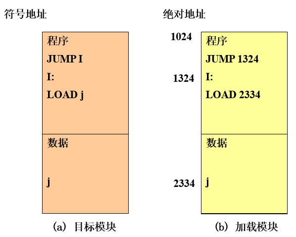
优点: 实现简单，无须进行逻辑地址到物理地址的变换
缺点:
- 程序每次必须装入同一内存区
- 程序员必须事先了解内存的使用情况，根据内存情况确定程序的逻辑地址
- 不适于多道程序系统
静态重定位
地址映射在程序加载时进行，以后不再更改程序地址
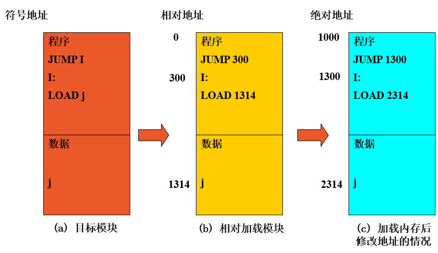
优点: 易实现，无需硬件支持
缺点: 程序重定位后就不能移动，因而不能重新分配内存，不利于内存的有效利用
动态重定位
程序的地址转换不是在加载时进行，而是在程序运行时动态进行，在运行时通过重定位寄存器内的起始物理地址和指令或数据的逻辑地址计算其物理地址
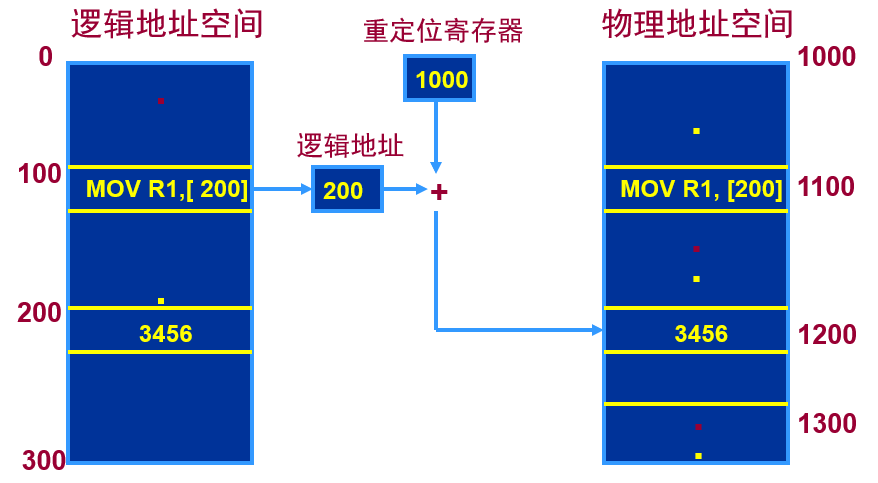
优点:
- 程序不必连续存放在内存中，可分散存储，可移动
- 便于共享
- 有利于紧凑、碎片问题的解决
缺点:
- 需要硬件支持，实现存储管理的软件算法比较复杂
- 同一地址，可能多次转换
内存管理的需求
重定位
因为程序员事先并不知道在某个程序执行期间会有其他哪些程序驻留在内存中，也不知道下一次装入内存的物理地址，因此需要将程序写为逻辑地址来表明程序功能，而OS需要将程序的逻辑地址转换为内存中的物理地址才能对程序进行执行
而将逻辑地址转为物理地址就叫重定位
保护
指: 进程以外的其他进程中的程序不能未经授权地访问(进行读操作或写操作)该进程的内存单元
因此需要既支持重定位也支持保护的硬件
共享
多个进程正在执行同一程序时，允许每个进程访问该程序的同一个副本，要比让每个进程有自己独立的副本更有利
因此需要既支持重定位也支持共享的机制
逻辑组织
内存被组织成一维线性空间，而没有外存的存在，在编写程序时不需要管理内外存交换
物理组织
而真实的物理组织是内外存的差异的，OS需要满足逻辑组织的需求，将两层存储结构间进行数据移动
内存分区
内存管理的主要操作是处理器把程序加载内存中执行
在基本内存管理中主要有4种分区方法，加上虚存技术后共6种分区方法，但总的来说只有2种分区思想: 固定分区(分页是固定分区的升级思想)和动态分区(分段是动态分区的升级思想)
固定分区
固定分区的思想: 将除操作系统占用的内存，按照固定的大小分为不同的区域，区域的大小可以是均匀的也可以是不均的
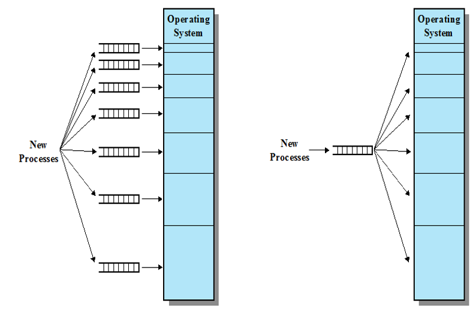
如果每个区域大小相同:
- 程序可能太大而不能放到一个分区中
- 内存的利用率非常低，因为小程序占用了比需求大的空间，从而产生内部碎片(区域内的空闲空间)
不等大分区可以缓解内部碎片问题，同样如果将区域划分为很小，并且将进程也划分为与区域一样小的块，则可以将多个进程块装入不同区域(分页思路的来源)
固定分区存在的问题: 分区的数量在系统生成阶段已经确定，因而限制了系统活动(未挂起)进程的数量
动态分区
动态分区就是分配与进程需求完全一致的空闲内存空间，因此分区大小和数量不固定
分段思路的来源: 将进程分为不同的模块，每个模块都由OS进行动态分区，这一个分区就是段
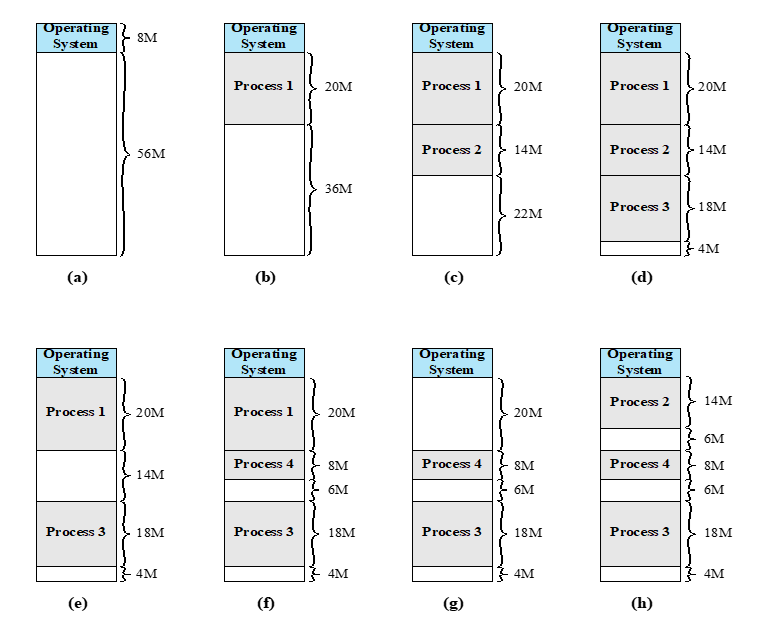
动态分区方法在内存中产生越来越多的外部碎片(不同分区间的内存区域，但是由于太小而无法满足任何一个进程的需求从而浪费)
外部碎片的解决方法: 压缩技术: 在一段时间后或内存不能找出任何一块区域来满足需求时，OS将所有进程进行移动，将外部碎片全部清除掉从而得到新的一大块空间
匹配算法
动态分区会产生很多块空闲的空间，如果很多空间都能满足需求，如何选择哪块空间来满足需求则需要匹配算法
首次匹配
思想: 从头开始扫描内存，选择大小足够的第一个可用块
评价:
- 为大作业分配大的内存空间创造条件
- 内存前端出现很多小的空闲分区，且每次查找都要经过这些分区
循环匹配
思想: 从上一次放置的位置开始扫描内存，选择第一个大小足够的可用块
评价:
- 比首次匹配性能差，常常在内存末尾分配空间，导致空闲的分区分布均匀
- 缺少大的空闲块，需要更多次数紧凑
最佳匹配
思想: 选择空间大小与需求最接近的空闲块分配
评价:
- 产生的外部碎片都很小
- 内存中形成很多小到无法满足任何分配需求的块，需要更频繁的进行内存压缩
最差匹配
思想: 选择满足需求的最大的空闲分区分配
评价:
- 每次分配留下的空闲空间较大，便于再次利用
- 大的空间不容易保留，对大作业不利
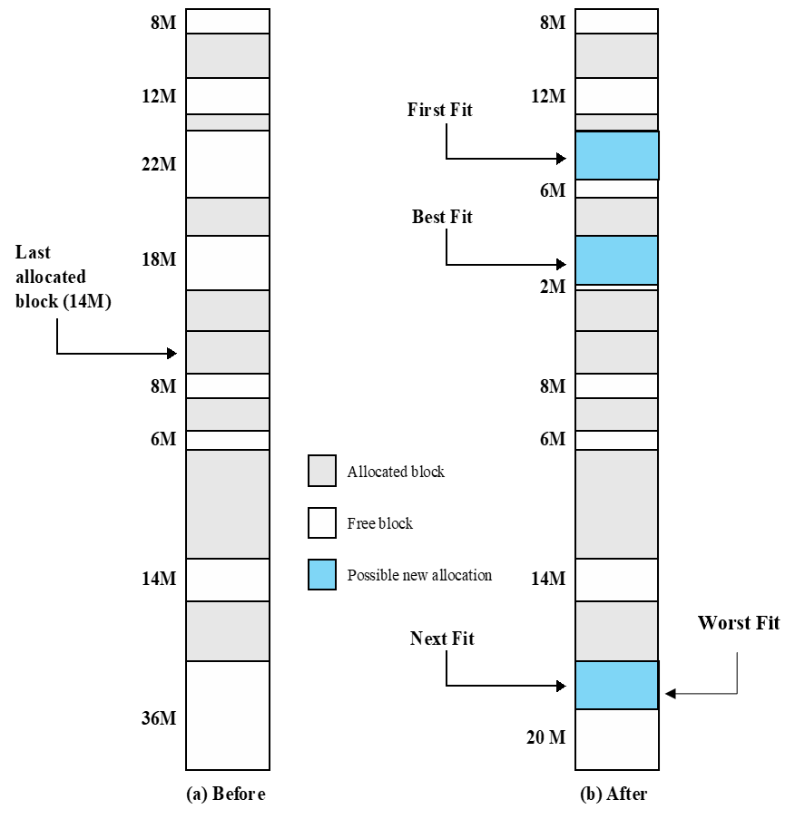
伙伴系统
固定分区方案限制了活跃进程的数量。并且，如果分区大小与进程大小不匹配，则内存空间的利用率非常低
动态分区方案维护复杂，并且引入了紧凑的额外开销
因此出现了伙伴系统，其结合了固定分区与动态分区思想，每一次分区都是固定分区，但分的大小是根据需求来定的
伙伴系统: 内存空间被视为一个大小为的块，每次分配的块的大小为，L ≤ K ≤ U， = 分配的最小块的大小， =分配的最大块的大小
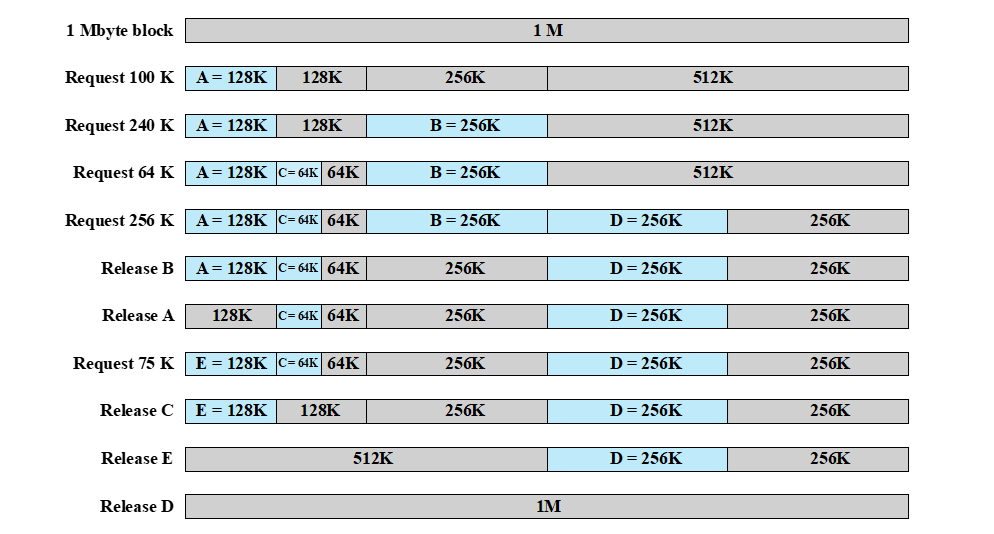
分页
分页: 将内存划分成大小固定、相等的块(称为页框)，且块相对较小，进程也划分成同样大小的块(称为页)
页表: 操作系统为每个进程维护一个页表，页表固定存放在内存中，起始地址由PCB进行保存，并且由页表寄存器存放当前运行进程的页表的起始地址
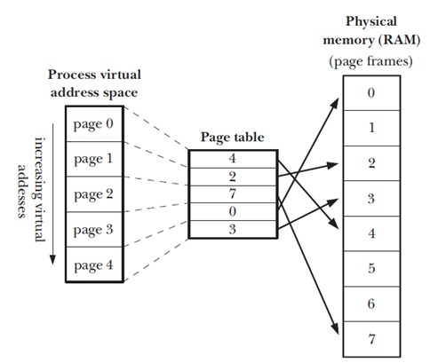
页表中记录了从逻辑地址到物理地址转换需要的对应关系——页号与页框号的映射
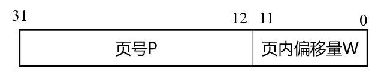
逻辑地址由页号和页内偏移组成，在进行逻辑地址转为物理地址过程中，根据页面将页号映射为页框号即可
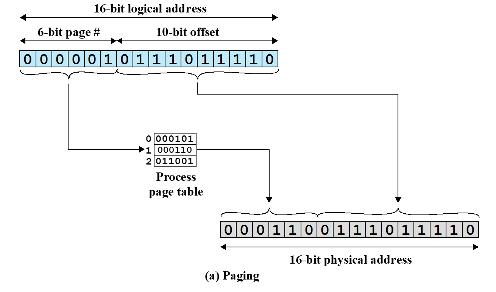
逻辑地址的计算
若给定一个逻辑地址空间中的地址为A，页面的大小为L，则页号P和页内地址d:
如: 某系统的页面大小为1KB，设A = 2170 B，试计算其页号P与页内地址d
将结果转为二进制: 2 = 00 0010，122 = 00 0111 1010，因此逻辑地址为0000 1000 0111 1010
分页的优点:
- 存在页内碎片，但碎片相对较小，内存利用率较高
- 实现了离散分配
- 无外部碎片
分页的缺点:
- 需要专门的硬件支持，尤其是快表(页面项放在cache中)
- 不支持动态链接，不易实现共享
分段
分段: 将程序划分为几段，每段长度可以不相等但有最长限制，每个段都从0开始编址，并占用一段连续的地址空间
段表: 记录逻辑段和物理段的映射关系
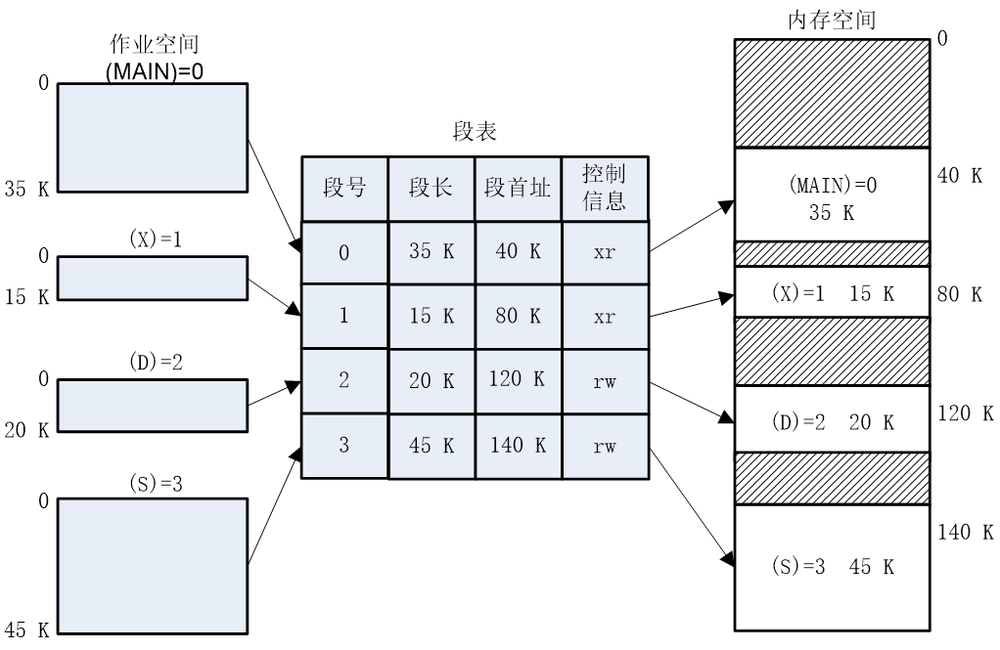
段表中同样也记录了记录了从逻辑地址到物理地址转换需要的对应关系——段号与段首址的映射关系，但段表比页表多了一个项，段长，如果段内偏移大于段长则出现了地址错误
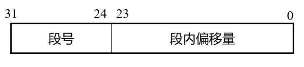
逻辑地址由段号和段内偏移组成，在进行逻辑地址转为物理地址过程中，根据段号找到对应段首址，如果段内偏移小于段长，则将段首址加上段内偏移即可得到物理地址(相加时段内偏移高位补零)
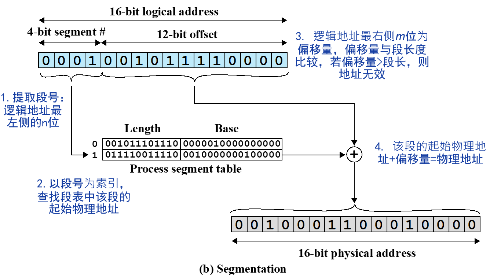
分段的优点:
- 便于程序模块化设计
- 便于动态链接
- 便于保护和共享
- 无内部碎片
分段的缺点:
- 地址转换需要硬件的支持——段表寄存器
- 分段的最大尺寸受到主存可用空间的限制(可用虚存技术)
- 有外部碎片
分段与分页的比较
- 页是信息的物理单位，分页的目的是实现离散分配，减少内存的外部碎片，提高内存的利用率。或者说，分页仅仅是由于系统管理的需要而不是用户的需要。段则是信息的逻辑单位，它含有一组意义相对完整的信息。分段的目的是为了能更好地满足用户的需要
- 页的大小固定且由系统决定，由系统把逻辑地址划分为页号和页内地址两部分，是由机器硬件实现的，因而在系统中只能有一种大小的页面；而段的长度却不固定，决定于用户所编写的程序，通常由编译程序在对源程序进行编译时，根据信息的性质来划分
- 分页的作业地址空间是一维的，即单一的线性地址空间，程序员只需利用一个记忆符(逻辑地址)，即可表示一个地址；而分段的作业地址空间则是二维的，程序员在标识一个地址时，既需给出段号，又需给出段内地址
- 分页存储管理系统不易实现共享，不支持运行时动态链接，而分段系统易于实现共享和动态链接
虚拟内存管理
虚拟内存: 在存储分配机制中，辅存可被看作主存的一部分来完成寻址，程序使用的地址与内存物理存储的地址不同，程序生成的地址会自动转换为物理地址。虚拟存储的大小受计算机系统寻址机制和可用辅存容量的限制，而不受主存实际大小限制
虚拟地址: 在虚拟内存中分配给某一位置的地址，它使得该位置可被访问，就好像是主存的一部分那样，有时也称为逻辑地址(与基本内存管理逻辑地址相同)
虚拟地址空间: 分配给进程的虚拟存储
地址空间: 用于某进程的内存地址范围
实地址(物理地址): 内存中存储位置的地址
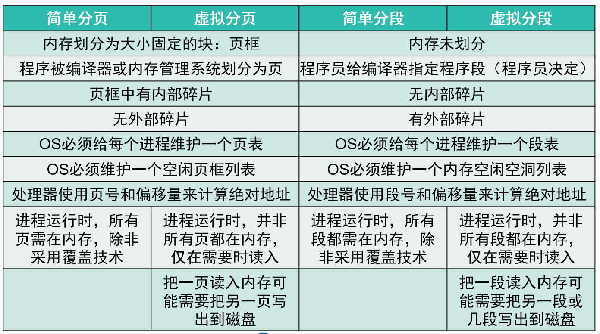
虚存技术最重要的是无需将全部程序装入内存，而是只装入部分，其他部分在需要使用时再装入
抖动: 即将要用到的块被换出，系统又得很快将它取回，导致页面被频繁地换入换出，缺页率急剧增加
当内存空间几乎被进程块占据时，每读取一块，必须把另一块换出，如果出现抖动，处理器的大部分时间都用于交换而非执行指令，因此需要选择合适的置换策略
虚存的硬件与控制结构
局部性原理(虚存的合理性)
局部性原理: 存储器的访问呈簇(cluster)性(簇：一组程序或数据的集合)，在很长一段时间内，使用的簇会发生变化，但在很短的时间内，处理器基本上只与固定的簇打交道
如果发生缺页则进行中断，将页面从外存中调入内容
解释:
- 描述了进程中程序和数据引用的集簇倾向
- 在很短的时间内仅需要进程的一部分块
- 对将来可能会访问的块进行猜测，以避免抖动
虚拟分页
虚拟内存通常与使用分页的系统联系在一起，并且分页的虚存方案中，页表项变得更复杂
分页逻辑地址仍然为页号和页内偏移组成，其转换方法也仍然为将页号映射为页框号，但页表项发生了改变
- P: 存在位，表明对应的页是否在内存
- M: 修改位，表明相应页上次装入内存到现在是否修改过
然而虚拟分页的逻辑地址转为物理地址的过程仍与基本内存中相同
多级分页
每个进程一个页表，如果进程的逻辑地址空间大，则页表庞大，例如每个进程虚存空间可达=4GB，若每个页大小=1K字节，则需要个页表项，每个页表项为4字节，页表大小则总共需要4MB
因此可以将页表再次进行分级，次页表也放置于虚存中，可以减少对内存的占用，只有顶层页表放置在内存中以便查询
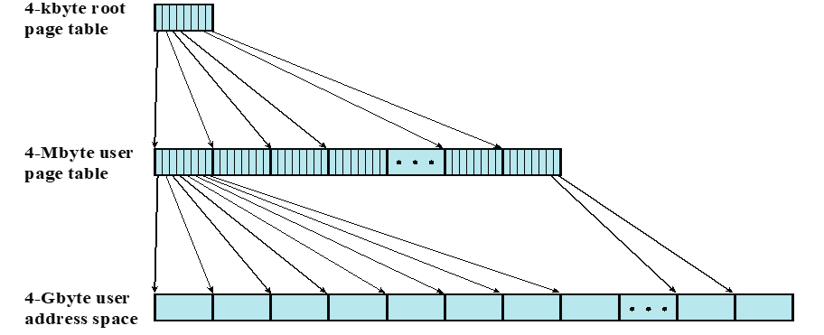
因此逻辑地址的含义也发生了变化，高10位作为页表页号，中间10位作为页号，低12位作为页内偏移
在逻辑地址转为物理地址时，则需要先根据根页表将页表页号转为页表的物理地址，再从页表中将页号转为页框号，最后得到物理地址
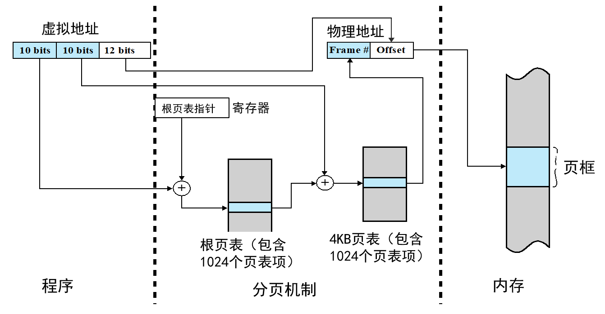
例题:
32位逻辑地址空间、4KB页面、4B页表项、求逻辑地址4197721的物理地址？
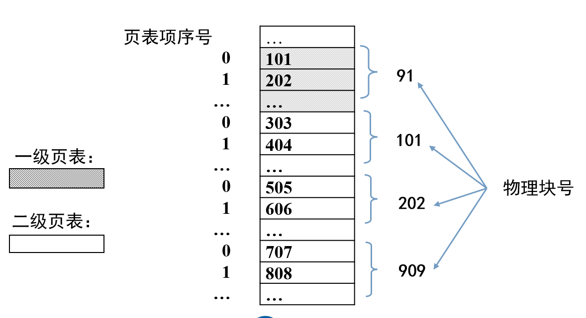
首先将逻辑地址4197721转为二进制0000000001 0000000000 110101011001，高10位为页表页号=1，中间10位为页表号为0，低12位为页内偏移
查表得，页表页号1转202，在202的页表内查询，页表号0转为505，将结果转为二进制505=0111111001，因此结果为00000000000111111001 110101011001=物理地址2071897
注意最后的505是高22位！(因为505是页框号，是代表除页面偏移地址外的所有物理地址)
当两级页表也十分大时，可以再次分级，形成多级页表，原理与二级页表相同，但会增加额外的存储空间，页表的级数越多，地址转换过程越复杂，转换的速度也越慢
倒置页表
倒置页表: 虚拟地址的页号部分使用一个简单的散列函数(hash)映射到散列表中，即将页号hash成页框号
页表结构称为倒排的原因是，它使用页框号而非虚拟页号来索引页表项
无论有多少进程、支持多少虚拟页，页表都只需要实存中的一个固定部分(即页框数量的部分)
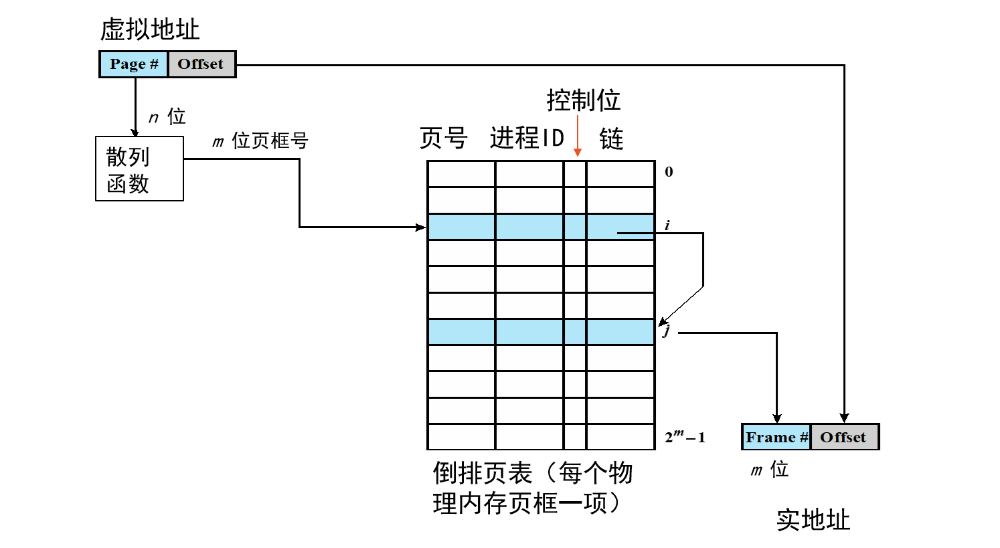
TLB(快表)
将一部分页表项放入cache中，以便快速使用
具体访存在组成原理中有所介绍
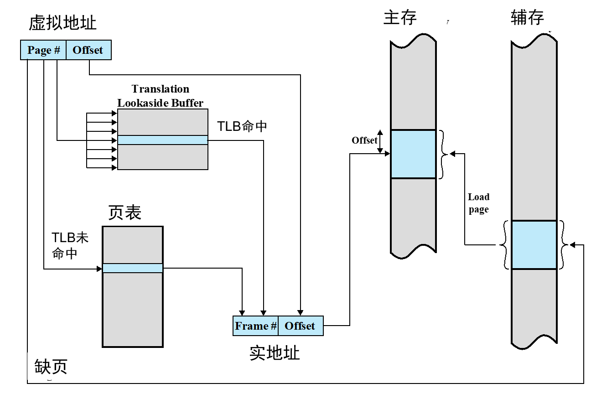
页面大小
缺页率: 发生缺页的次数与总访问次数的比值
在基本内存管理中，因为没有虚存技术，因此程序执行时所有的页都必须在内存中，页面小并不会带来什么严重后果，反而页面越小，内部碎片的总量越少
然而在虚存中，页面越小，每个进程需要的页的数量越多，而页表也越大，一次内存访问可能产生两次缺页中断，因此页面大小会影响缺页率
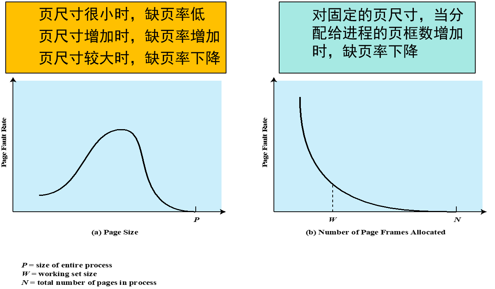
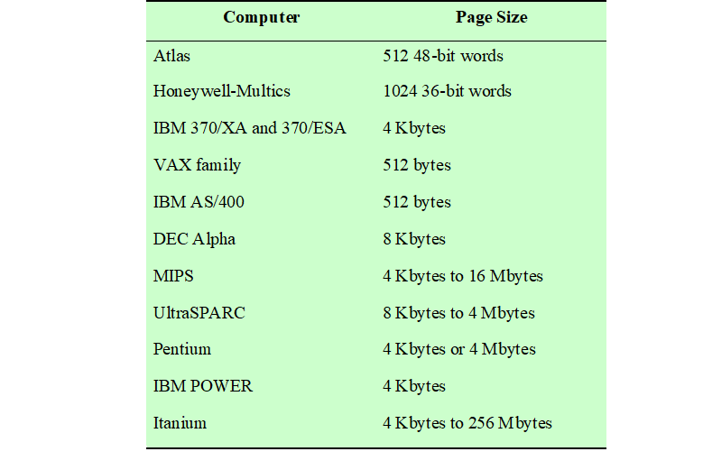
虚拟分段
虚拟分段与基本内存分段几乎没有区别，仅仅段表项进行了一点改变，增加修改位、存在位等属性
分段式逐渐被淘汰，虚拟分页为现代操作系统主流方式
段页式
段页式: 用户的地址空间被程序员划分为许多段，每段划分为许多固定大小的页
- 支持数据结构增长: 段长可变
- 支持共享和保护
- 消除外部碎片
- 有效利用内存
- 先根据段表起始地址(段寄存器)和段号查找段表，得到对应段的页表起始地址
- 根据页表起始地址和页号查找页表，得到页框号
- 页框号和偏移量构成物理地址
因此段页式需要访存3次:
- 第一次，访问段表，从中获得该段的页表首址
- 第二次，访问页表，从中取出逻辑地址指定的页面所在的页框号，并将该页框号和页内偏移量相加，形成物理地址
- 第三次，根据物理地址，取出对应存储单元的指令或数据
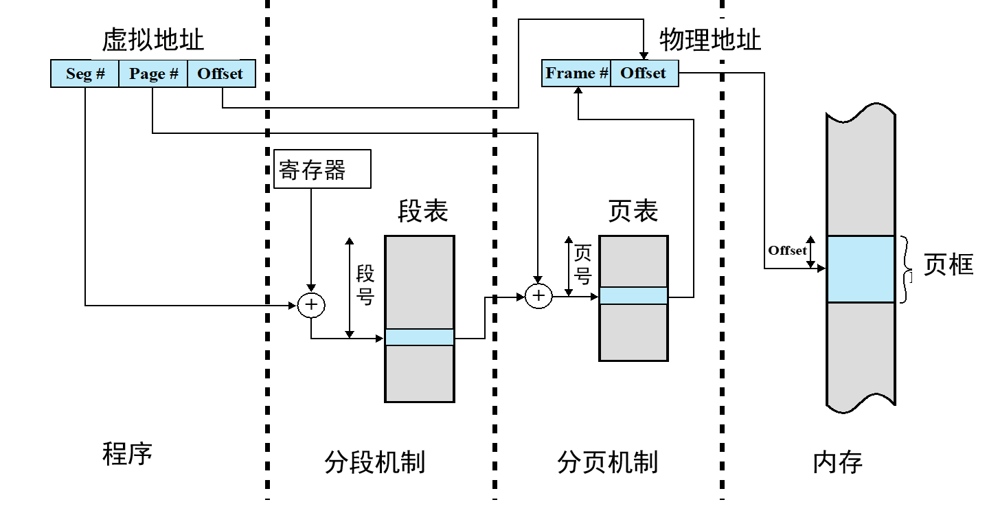
保护与共享
分段有助于实现保护和共享机制:
- 保护: 每个段都包括一个长度和一个基地址，可以控制非法访问(超出段长度会产生内存错误，不被处理器允许)
- 共享: 一个段可以在多个进程的段表中被引用，实现共享
而分页对保护和共享并不友好:
假定每个页面4KB，160KB的共享代码需要40个页面
每个进程需要40个页表项来存储相应信息，开销160B(设定每个页表项4B)
共享部分作为一个段，每个进程仅需1个段表项来存放共享段信息，开销4B
操作系统对虚存的管理
读取策略
读取策略: 决定某页何时进入内存
- 请求调页(Demand Paging):
- 仅在引用页面时，才把相应的页面调入内存
- 进程首次启动时，会发生很多缺页中断
- 局部性原则表明，大多数将来访问的页面都是最近读取的页面，一段时间后，缺页中断会降低到很低的水平
- 预调页(Prepaging):
- 额外读取所缺页面以外的页面
- 考虑大多数辅助储设备的特性: 寻道、旋转延迟等
- 若进程的页面连续存储在辅存中，则一次读取多个页面会更有效
- 如果额外读取的页面未使用，则低效
放置策略
放置策略: 确定进程驻留在内存中的位置
是分段系统中的重要设计内容，放置策略即动态分区中的匹配算法
置换策略
置换策略: 读取新页时，若内存页面不足，具体淘汰哪个页面用以置换
需要说明的是，OS提供页框锁定功能(对页框锁定位进行标记)，当页框被锁定时，当前存储在该页框中的页面不能被置换，一般用于保存操作系统内核和重要的数据结构，I/O缓冲区和时间要求严格的区域也可能保存在锁定的页框中
常见置换策略:
- 最优(OPT)
- 最近最少使用(LRU)
- 先进先出(FIFO)
- 时钟(Clock)
OPT
思想: 置换下次访问距当前时间最长的页面
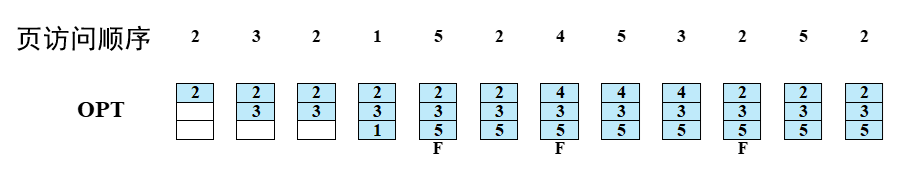
但是在实际情况中很难得知页的访问顺序，因此OPT策略几乎无法使用
LRU
思想: 置换内存中最长时间未引用的页面(原理为局部性原理)
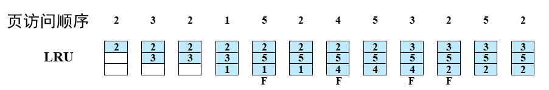
LRU的最大问题在于其开销大，需要每页添加最近访问时间戳或建立链表来记录访问
FIFO
思想: 将页框视为队列，置换驻留在内存中时间最长的页面
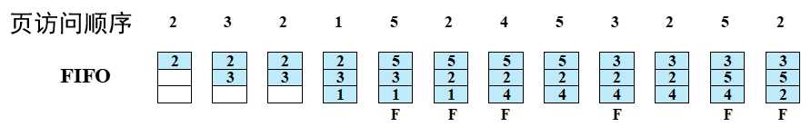
实现简单
Clock
思想: 是一种最近未使用算法，置换的页面都是最近没有使用的那个
方法:
- 每个页框关联一个使用位U(也称访问位)
- 当页面首次加载到内存中或被引用时，使用位U设置为1
- 发生缺页中断时，检查表针指向页面
- 如果使用位为0，则新页面替换之，表针前移一个位置
- 如果使用位为1，则清0，表针前移一个位置
- 一直循环，直到置换完成
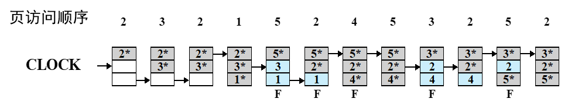
改进的Clock策略
除了使用位U，每个页框还有修改位M
- 从指针当前位置开始扫描，这次扫描对使用位不作任何修改，选择遇到的第一个页框(U = 0, M = 0)置换
- 若第1步失败，重新扫描，选择遇到的第一个(U = 0, M = 1)的页框置换。这一过程中，将使每个扫描过的页框U置0
- 若第2步失败，则再次重新扫描，重复第1步，并在必要时重复第2步
改进Clock置换的优先级(从高到低):
- (U = 0, M = 0)
- (U = 1, M = 0)
- (U = 0, M = 1)
- (U = 1, M = 1)
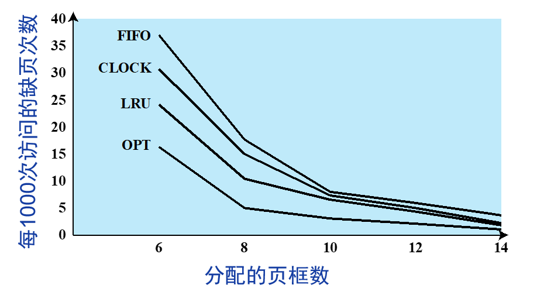
可以看出LRU在实际情况中效果最好，FIFO效果最差并且可能出现Belay异常
页缓冲
置换的页，如果要写回辅存，代价较大，因此在内存中有一批专用页框，分别为空闲页和修改页
当有页需要被置换时，如果页未被修改，则放入空闲页链表的尾部，如果页已被修改，则放入修改页链表的尾部
空闲页链表满后仍然按照一定的置换策略进行置换，而修改页链表满后成批写回辅存
对于较大的cache，如果置换页在cache中则会对性能产生影响，因为cache及内存中所对应的页都将失效
因此在使用页缓冲的系统中，可以从页缓冲区中选择任意页框来放置从而提高高速缓存性能
驻留集管理
驻留集大小
页框分配: 即给每个活动进行分配多少个页框
- 分配给每个进程的内存越小，可以驻留在内存中的进程越多
- 一个进程在内存中的页面少，则缺页率相对较高
- 进程分配的页框数超出一定大小后，由于局部性原理，缺页率下降到稳定水平
页框分配有2种方式:
- 固定分配: 在内存中为进程提供固定数量的页框，发生缺页时，必须替换该进程的其中一个页面
- 可变分配: 允许分配给进程的页框数在进程的生命周期内变化，发生缺页时可以通过增加驻留集大小(即置换掉其他进程的页面)来调入页面
置换范围
置换范围: 计划置换的页集局限于产生缺页的进程本身(局部)，还是内存内的所有非锁定进程(全局)
固定分配，局部置换
- 页框数大
- 增加了处理器的空闲时间(内存中进程少)
- 增加了花在交换上(swapping)的时间
- 页框数小
- 缺页率高
可变分配，全局置换，是主流方法
- 实现容易
- 选择置换对象不当，将容易再次产生缺页中断(页缓冲可以缓解问题)
可变分配，局部置换
- 当缺页中断发生时，从进程驻留集中选择一页用于置换
- 不时重新评估进程的页框分配情况，增加或减少分配的页框，以提高整体性能
工作集
工作集: 进程在虚拟时间t的参数为Δ的工作集W(t, Δ)，表示该进程在从t开始往前的的Δ个虚拟时间单位被访问到的页集合
虚拟时间窗口Δ越大，则工作集越大
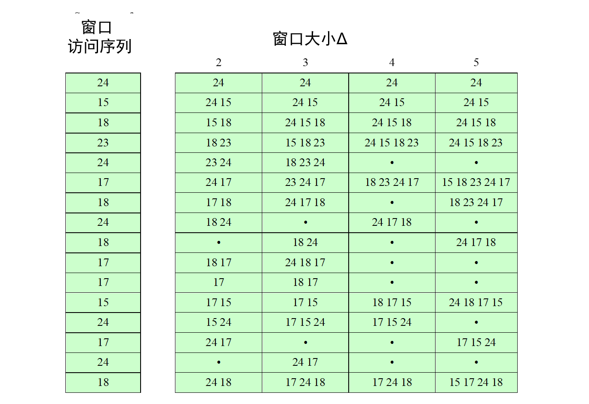
对于固定的Δ，工作集大小随时间变化的情况: 稳定阶段和快速变化阶段交替出现
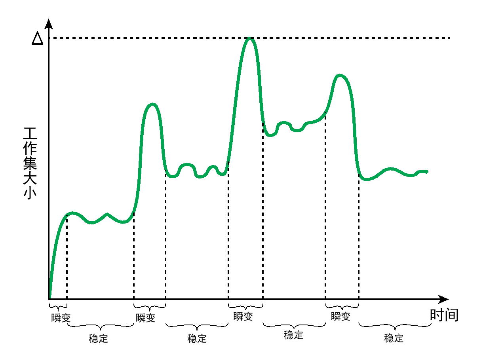
根据工作集来决定驻留集的大小: 周期性的从驻留集中移去不在工作集中的页(近似LRU)
清除策略
清除策略: 用于确定何时将修改过的页写回辅存
- 按需清除(Demand Cleaning): 只有当一页被选择用于置换时才被写回辅存，发生缺页中断的进程在解除阻塞前需等待两次页传送(没有页缓冲): 写回修改页+读入新页
- 预清除(Precleaning): 将修改的多页在需要使用它们占据页框之前，成批写回辅存，但预先写回辅存的页，在置换前可能又会被修改，使得预清除意义不大
结合页缓冲技术后，只清除用于置换的页，已修改表中的页可以成批写回辅存
负载控制
负载控制: 决定驻留在内存中的进程的数量
- L=S准则: 发生缺页的平均时间L等于处理缺页故障的平均时间S，此时处理器的利用率最大
- 监测Clock算法中指针扫描的速度:
- 速度低，缺页率低，增加多道程序度
- 速度高，缺页率高或多道程序度高，降低多道程序度
本博客所有文章除特别声明外，均采用 CC BY-SA 4.0 协议 ，转载请注明出处！